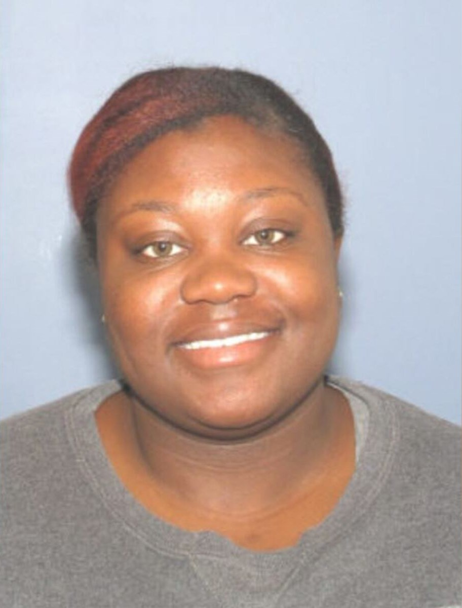

At about 9:23 p.m. on Saturday, March 16, 2019, Darian Woods, 26, was shot in the head in her car in the 1700 block of Westwood Avenue in South Fairmount. She was pronounced dead on arrival at UC Medical Center. A Cincinnati detective later said she had been waiting in the car while a friend she had given a ride to went into a nearby rap studio, and that people who were after the friend pulled up and fired into the car, probably not knowing she was inside. No one has been charged.
Her family says she graduated from college, worked two jobs and was going back to school to become a pediatric surgeon. Police call her a bystander. Her mother says the man she was with was only a friend, and in April 2025 told WCPO: "There are people out there that know what happened." We name no one else: police have never released the friend's name.
Editorial assessment of public sources, not a finding of fact. Nobody named here has been charged unless this page says so.
Details come from WKRC (Local 12) in March 2019 and March 2020, FOX19 (Mar 17, 2019), WCPO (2019, 2020 and April 2025), her Enquirer obituary, TheCount.com, the funeral home, the Gun Violence Archive memorial, and the Greater Cincinnati Crime Stoppers homicide listing. FOX19 and WKRC first printed her name as "Darian Wood"; TheCount.com says "Woods" is correct.
Darian Woods is born, per the funeral home listing. Friends and family also knew her as "Deeno" and "Dutchess," per a memorial page and TheCount.com.
Her father died 11 months before she did, according to her mother (WKRC, 2020).
Her mother last sees her around 3 p.m. Darian is later contacted by a friend who needs a ride (WKRC, 2020).
She is parked on Westwood Avenue while the friend goes into a nearby rap studio, according to a Cincinnati detective (WKRC, 2020).
Officers responding to a call about a shooting find her in the 1700 block of Westwood Avenue with a head wound. She is taken to UC Medical Center and pronounced dead on arrival. WCPO puts the time at about 9:30 and WKRC at about 9 (FOX19; WCPO; WKRC).
WKRC, FOX19 and WCPO report a woman killed in South Fairmount. FOX19 and WKRC print her name as "Darian Wood." TheCount.com says Woods is correct and gives her nickname, "Dutchess." Police ask for tips at 513-352-3542 and 513-352-3040.
The Cincinnati Enquirer prints her obituary: beloved daughter of Tracie and the late Pastor Darryl Woods, survived by one brother. Condolence messages call her a beautiful young woman who was like family to friends (Legacy.com).
Visitation and service at New Prospect Baptist Church, 1580 Summit Road, Cincinnati, followed by burial at Landmark Memorial Gardens in Glendale (obituary; funeral home).
A detective says that months later a car pulled up beside the friend on a highway and opened fire. The friend was not hurt, but a passenger was killed. Police have tied the friend to another homicide and have not released his name (WKRC, 2020). Date not stated. -Maybe
WKRC reports a police appeal for help. Detective Greg Gehring says the friend "never seems to get hurt" while people around him are killed, and that investigators want to solve a case in which an innocent person died because of someone else's actions. A balloon release is planned at 1741 Westwood Avenue.
At the city's cold-case memorial at Memorial Hall, her mother says: "The police are not magicians. They can't pull something from nothing." She asks anyone with knowledge to come forward (WCPO).
Greater Cincinnati Crime Stoppers lists the case as open, with no photo (seen Oct 23, 2026).
A college graduate with plans to become a pediatric surgeon.

Photo: FOX19 (Natalya Daoud), Mar 17, 2019. FOX19 holds the copyright; shown at the site owner's direction. Contact us to have it removed.
DiedBorn Jan 29, 1993. The daughter of Tracie and the late Pastor Darryl Woods, with one brother, per her obituary. Her mother says she was her firstborn, a great athlete who could also dress up and be a lady, graduated from college, worked two jobs and was going back to school to become a pediatric surgeon. She sang well and played the clarinet (WKRC, 2020). A memorial page lists the University of Alabama among her schools; that page is user-submitted. We do not name her living relatives.
Each photo is credited under the picture. Family members or others who want a photo added, changed, or removed can use the contact form at the bottom of this page.
What exists, and what each piece may or may not mean.
| Item | What is known | Disputed or unknown |
|---|---|---|
| The shooting | She was shot in the head while in her car in the 1700 block of Westwood Avenue (WKRC; FOX19). | Number of shots, caliber and where in the car she was hit: not public. |
| How it happened | Per a detective: people who were after the friend pulled up beside the parked car and fired into it, probably not knowing she was inside (WKRC, 2020). | The vehicle, the number of shooters, and which way they went: not public. |
| Her car | Parked on Westwood Avenue while the friend went into a rap studio (WKRC, 2020). | Which studio, and whether it has cameras: not public. |
| The friend | Police have tied him to another homicide; a later highway shooting killed his passenger but missed him (WKRC, 2020). | His name, his account, and whether the cases are linked: not public. He is a witness here and is not named. |
| Motive | Police say the shooters were after the friend, not Darian. | Her mother disputes that the man was her boyfriend. No motive for the original dispute has been published. |
| Suspects | None named publicly. | Unknown. |
Local news reports and the Crime Stoppers listing are the public record. The police file and autopsy are not public.
| Document | Holder | What it shows | Access |
|---|---|---|---|
| WKRC: Police asking for help (Mar 2020) | WKRC | The detective's account and her mother. | Online, free |
| Crime Stoppers homicide listing | Greater Cincinnati Crime Stoppers | Open listing; no photo. | Online, free |
| Coroner's report | Hamilton County Coroner | Cause and manner of death. | Request needed |
| Cincinnati Police case file | Cincinnati Police Department | The investigation. | Withheld or sealed |
Access labels: Online, free = we could open it. Fan-hosted copy = a private researcher posted scans; originals are held by the named agency, and we cannot vouch for completeness. Quoted in news = reporters read it; we did not see the document itself. Request needed = held by an agency or court. Withheld = the holder has not released it. We cannot reach non-public records, and we do not try to.
Where people talk about this case online, and how to read it.
| Platform | Live search | What you tend to find |
|---|---|---|
| Google: Reddit | site:reddit.com search | Public Reddit threads that Google has indexed, including old discussions. |
| Google: X and Twitter | X and Twitter posts | Public posts and profiles that appear in search results. |
| Google: Facebook | Public Facebook pages and posts | Only public pages and groups that Google can see. Private groups never appear. |
| Google: Instagram and TikTok | Instagram and TikTok | Public posts, memorials, and videos. |
| Google: forums | Forums and message boards | Long-running true-crime forums. |
| Google News | Latest news | Newest reporting, which is usually more reliable than posts. |
| Search Reddit | Long discussion threads and theories, often by amateur researchers. No sign-in needed to read. | |
| X (Twitter) | Search X | Short posts, news links, and anniversary notes. May require sign-in. |
| Search Facebook | Public groups and family or community pages. Requires sign-in. | |
| Search #darianwoods | Memorial and true-crime posts. Requires sign-in. | |
| YouTube | Search YouTube | Documentaries, news clips, and interviews. Quality varies widely. |
Be careful with online theories. Naming a private person as a suspect can harm an innocent family, and many "identifications" on forums have been wrong. Our own tools could not read these platforms: Reddit blocks automated access, and the others require an account. The Google searches above work from your browser. To get new public mentions by email, make a free Google Alert for the case name in quotation marks.
What local and national reports say, and when we last checked for a solution.
| Date | Outlet | What it reported | Link |
|---|---|---|---|
| Mar 17, 2019 | FOX19 | Victim identified in South Fairmount shooting. | Read |
| Mar 16 to 17, 2019 | WKRC (Local 12) | Fatal shooting in Fairmount; she was shot in the head. | Read |
| Mar 2019 | WCPO | Shooting in South Fairmount leaves one dead. | Read |
| Mar 11, 2020 | WKRC (Local 12) | Police ask for help; the detective's account of a bystander. | Read |
| Apr 12, 2025 | WCPO | Her mother at the city's memorial: "There are people out there that know what happened." | Read |
Status is re-checked on a regular schedule. If you know of a development we missed, use the clue form near the top of this page or the contact form, and include a link.
No suspect has been publicly named.
Why named: People who pulled up beside her parked car on Westwood Avenue and fired into it.
Against: No names, vehicle, or description have been released.
Where a card shows a silhouette, we found no photo. Anyone who wants a photo added, changed, or removed can use the contact form at the bottom of this page.
The newest public coverage is WCPO's April 2025 report.
We put the chance that Darian was not the intended target, as police say, at roughly 85%. We put the chance that the shooters knew where the friend would be at roughly 60%, because they found his ride outside a specific studio. We put the chance of a charge within five years at roughly 8%, because police have named no suspect in more than seven years.
Editorial judgment, not statistics.
"—" means no public information, not a clean result.
| Person or idea | At the scene | Physical link | Legal outcome |
|---|---|---|---|
| The shooters (unidentified) | ✓ fired into her car | — none published | — unidentified |
| Darian was the target | ✗ police say not | — | — |
| The friend was the target | ✓ per police | — | — |
✗ excluded or contradicted · ✓ supports · ? disputed · — nothing public. No cell is an official finding.
Editorial reading of public records. A working theory, not a finding, and it names no individual.
Judgment, not statistics.
Questions raised by gaps in the public record.
The car that pulled up beside hers, and any video of it.
What the shooters wanted from the friend.
What he saw, and who he believed was after him.
Whether the gun appears in the later highway shooting or the other homicide police mentioned.
Cameras on or near the 1700 block of Westwood Avenue.
We found none; Crime Stoppers or the city could offer one.
"Not public" means we could not find a report.
| Item | Tested | Gap |
|---|---|---|
| Autopsy | Done at the Hamilton County coroner's office. | Report not public. |
| Scene evidence | Collected by Cincinnati Police. | Results not public. |
| Video | Unknown. | Not reported. |
| Police file | Cincinnati Police Homicide Unit. | Public index: not available. |
| Tool | What it could do | Status here |
|---|---|---|
| DNA from retained evidence | Identify a donor or exclude people. | Unknown; not reported |
| Forensic genetic genealogy | Identify an unknown donor from relatives. | Needs usable DNA; none reported |
| Ballistics database (NIBIN) | Link recovered casings or bullets to other crimes. | Not reported |
Local cases that moved after decades.
Investigators say a private genealogy investigation helped them identify Thomas Dunaway, who died in 1990, as the man who killed the 16-year-old. He cannot be indicted, so prosecutors sent a letter saying he would have been charged. The lesson: genealogy can name a killer after decades, even when no trial is possible.
In 2024, local investigators were being trained in the technique, which has already helped solve Cincinnati-area cases, according to FOX19. The lesson: the tool is now local, so cases with usable DNA have a real path forward.
Old crime-scene DNA matched relatives in a public database and led to a 2018 arrest. The lesson: a usable sample can still work after decades.
Case details come from public news coverage and the Boone County Sheriff's cold-case list. Confirm in court records.
| Claim | Source and date | Where it stands |
|---|---|---|
| Her name is "Wood" | FOX19 and WKRC, Mar 2019 | TheCount.com says her surname is Woods; later reports use Woods. |
| Darian Woods of Collinsville, Illinois | Search results | A different person, killed in a home invasion. Three people were charged there. Unrelated. |
| The man was her boyfriend | Police, 2020 | Her mother says he was only a friend. |
| Time of the shooting | FOX19 9:23 p.m.; WCPO about 9:30; WKRC about 9 | We use FOX19's 9:23 p.m.; all are close. |
| Mother's surname | WKRC 2020 (Woods); WCPO 2025 (Sledge) | Both are shown. |
| A May 2026 I-71 shooting | Search results | No source ties it to this case. |
South Fairmount is a neighborhood just west of downtown Cincinnati. The shooting happened in the 1700 block of Westwood Avenue, a main street in the neighborhood.
Open in maps: 1700 block of Westwood Ave., South Fairmount. We show no photograph of the scene.
| Source | Type | Rating | Use with care because |
|---|---|---|---|
| FOX19, Mar 17, 2019 | Local TV | A | Opened; time, place, hospital; misspells her name. |
| WKRC (Local 12), Mar 16-17, 2019 and Mar 11, 2020 | Local TV | A | Opened; the 2020 piece has the detective's account and her mother. |
| WCPO, 2019 and Apr 12, 2025 | Local TV | A | Opened; the 2025 piece has her mother's appeal. |
| Greater Cincinnati Crime Stoppers | Nonprofit tip line | B+ | Opened; open listing, no photo; its date line has a typo. |
| Thompson, Hall & Jordan Funeral Home | Funeral home | B | Opened; birth date, services. |
| TheCount.com, Mar 17, 2019 | Aggregator | C | Opened; the name correction and nickname. |
| Cincinnati Enquirer obituary, Mar 21, 2019 | Newspaper | A | Opened; parents, brother, services, interment. |
| WCPO, unsolved homicides piece (2020) | Local TV | B+ | Opened; 2019 clearance rate of 45%. |
| WLWT and the WCPO video | Local TV | n/a | WLWT blocked; the WCPO video was seen by title only. |
513-352-3542.
513-352-3040; text "CINTIP" plus your message to 274637 (CRIMES); tips can be anonymous.
Charging decisions.
Under the Ohio Public Records Act, I request copies of non-exempt records relating to the March 16, 2019 homicide of Darian Woods, 26, in the 1700 block of Westwood Avenue, Cincinnati, including incident reports, laboratory reports, and any evidence inventory. Please send electronic copies. If any part is withheld, please identify the exemption relied on and release all reasonably segregable material.
Agencies often withhold records of open investigations, so expect partial answers.
Darian was 26. Her mother has said she wants the person who shot her daughter "behind bars," and asked anyone who knows what happened to come forward. We would welcome any statement from her family.
Loading headlines…
Every fact on this page comes from one of these. Where they disagree, we say so above.
The police account of what happened comes from one detective in a March 2020 WKRC report. Her mother disputes that the man was her boyfriend. Police have not released the friend's name, and we do not name him: he is a witness and, per police, the intended target. Her photo is from FOX19's March 17, 2019 report and is used at the site owner's direction; FOX19 holds the copyright. We found no Websleuths thread, no arrest, and no reward.